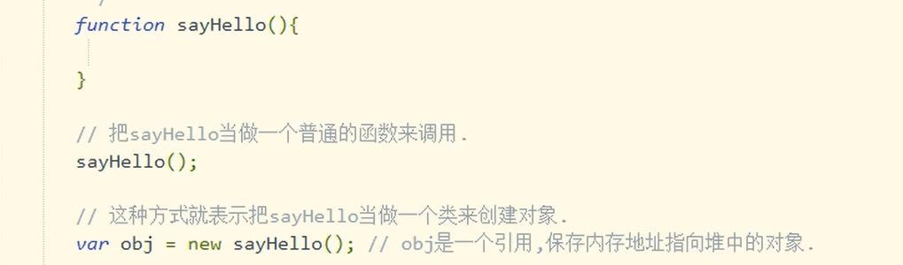

String类型
1.在JS中，字符串可以使用单引号，也可以使用双引号。
2.创建字符串对象
第一种：var =“”;
第二种：使用JS内置的类 var s=new String("abc");
注意:String的父类是Object。
var s1="lkkk";
var s2=new String("asdad");
typeof(s1);//结果为string
typeof(s2);//结果为object
常用属性：length 获取字符串长度
常用函数：1.indexOf（）获取字符串在当前字符串第一次出现处的索引
2.LastIndexOf()获取字符串在当前字符串最后一次出现的索引
3.replace()替换
4.substr()截取子字符串
5.subtring()截取子字符串
6.toLowerCase()转换小写
7.toUpperCase()转换大写
8.split()拆分字符串
判断一个字符串是否包含某个子字符串
alert("http://www.baidu.com".indexOf(http)>=0?"包含":"不包含");
将字符串中的"&"替换成"*"
s="&%%!#&#&@&#&&@#&&!@#^@&";
while(s.indexOf(&)>=0){
s.replace("&","*");
}
还可以用正则表达式。
substr和subsring的区别：
substring(startIndex,endIndex);
注意：不包含endIndex。
sbustr(startIndex,length);
substr第二个参数是子字符串长度。
substring第二个参数是截至下标，不包括endLndex。
Object类型
1.Object是所有类型的超类，所有自定义类型默认继承Object。
常用属性：
prototype属性：给类动态的扩展属性和函数
constructor
函数：
定义类的语法：
第一种方式：function 类名（形参）{
}
第二种方式：类名 =function（形参）{
}
创建对象的语法：
new 构造方法名（实参）；//构造方法名和类名一致。


null NaN和undefined的区别：
1.数据类型不一致
alert(typeof null) //"object"
alert(typeof NaN)//"number"
alert(typeof undefined)"undefined"
2.null和undefined可以等同
alert(null==NaN)//false
alert(null==undefined)//true
alert(undefined==NaN)//false
JS有两个比较特殊的运算符“==”“===”
==(等同运算符：只判断值是否相等)
===(全等运算符：既判断值是否相等，又判断数据类型是否相等)
JS常用事件：
1.blur(失去焦点)
focus(获得焦点)
2.change(下拉列表选中项改变，或者文本框内容改变)
3.click（鼠标单击）
4.dblclick(鼠标双击)
5.focus(获得焦点)
6.keydown(键盘按下)
7.keyup(键盘弹起)
8.load(页面加载完毕)
9.mousedown(鼠标按下)
10.mouseover(鼠标经过)
11.mousemove(鼠标移动)
12.mouseout(鼠标离开)
13.mouseup(鼠标弹起)
14.reset(表单重置)
15.select(文本被选定)
16.submit(表单提交)
任何一个事件都会对应一个事件句柄。事件句柄是在事件前添加on，事件句柄以属性存在。
注册事件
第一种方式：直接在标签中使用事件句柄。
第二种方式：使用纯JS代码完成事件的注册。
第一步：先获取这个按钮对象
(document是全部小写，内置对象，直接使用，document代表整个HTML页面)
var a=document.getElementById("mybtn");
第二步：给按钮对象的事件属性赋值
a.onclick=回调函数;//回调函数后面不能跟小括号
回调函数可以是匿名函数
a.onclick=function(){
alert("*****");
}
JS代码的执行顺序：

JS代码设置节点的属性：

捕捉键盘：

JavaScript 中this指向问题：
1、JavaScript中this指向和java中this指向 完全一致
1>在普通函数中，this指向调用当前函数的实例对象
2>在构造函数中，this指向当前构造函数生成object类型的对象


function匿名声明方式浏览器js编译器认为其为命令行。
京东面试题

答案：223


答案：window.home=undefined window.home=辽宁；


在浏览器调试JavaScript命令：F12---->sources